The festivals of Sri Lanka are very popular because of its versatility and variety of performances by the people of Sri Lanka. They not only showcase the culture of the country, but also its beautiful traditions and history.
 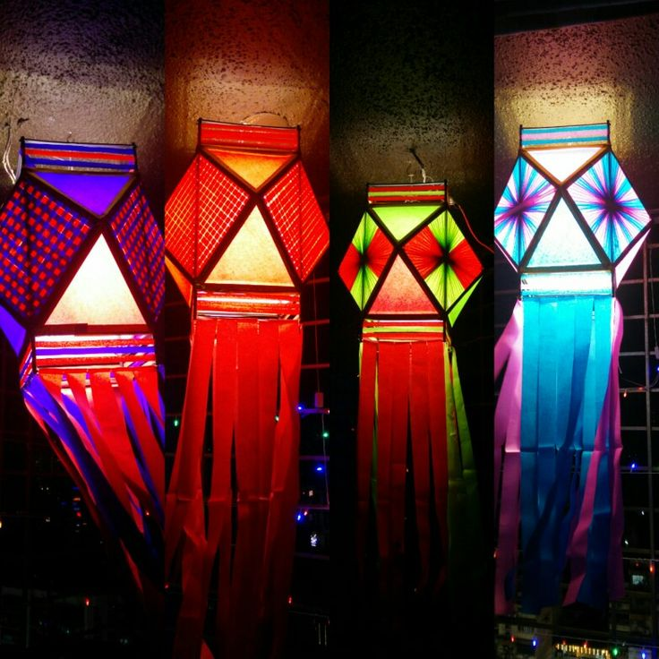
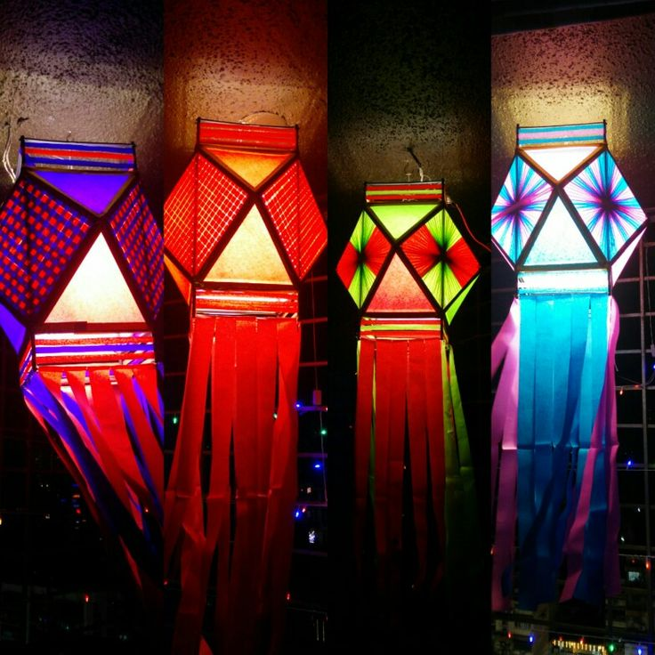

 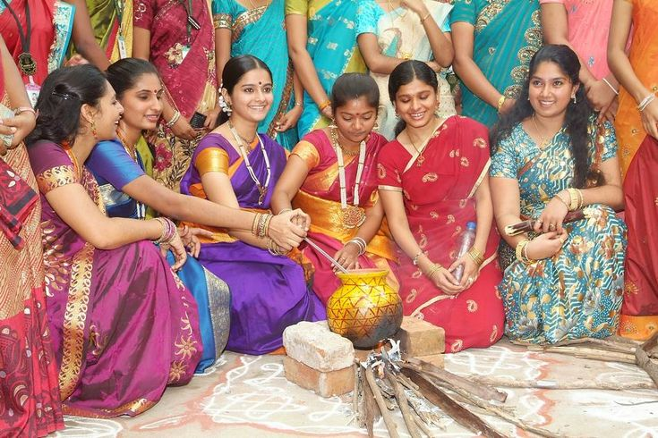
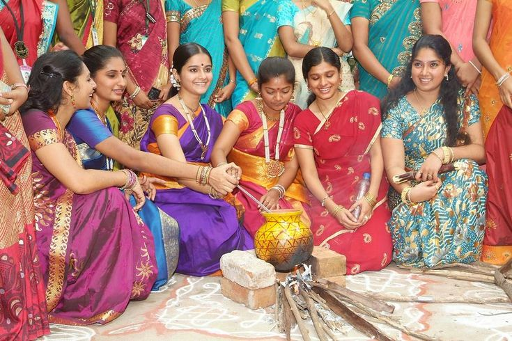
 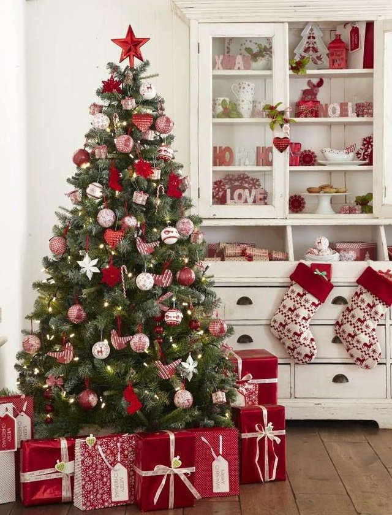
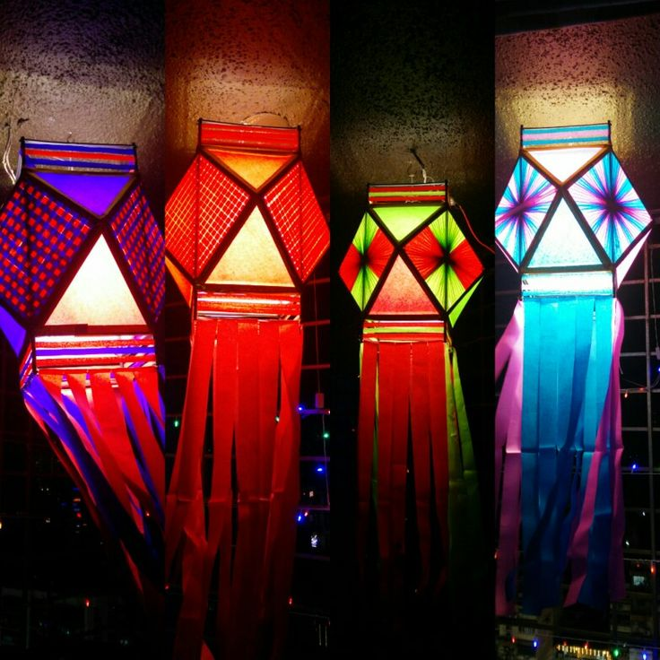
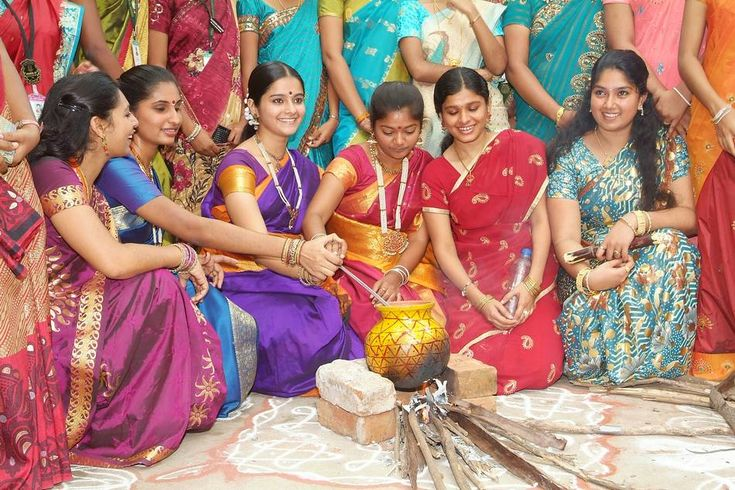
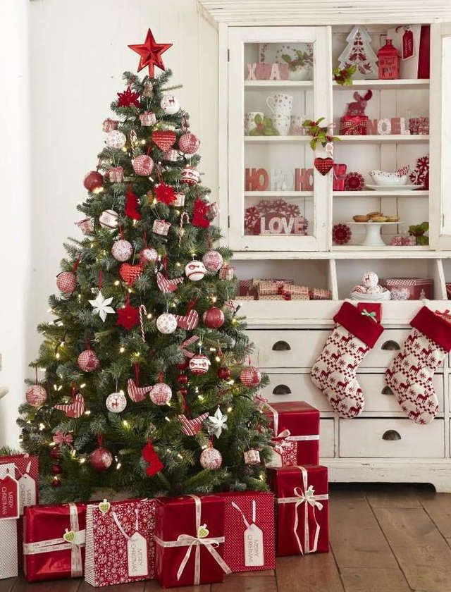
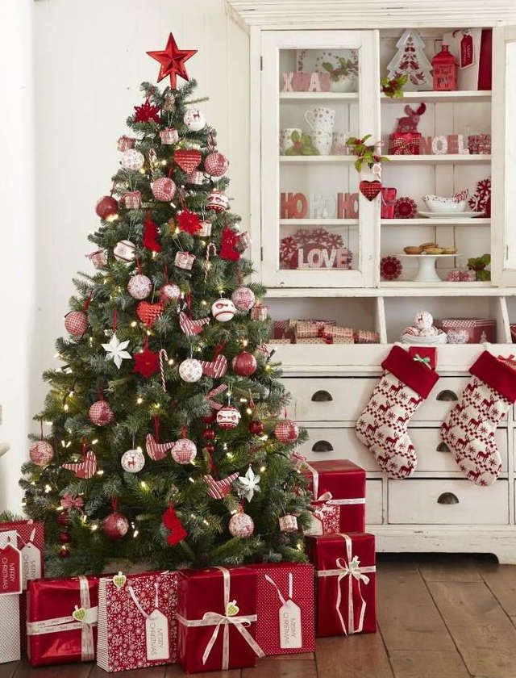
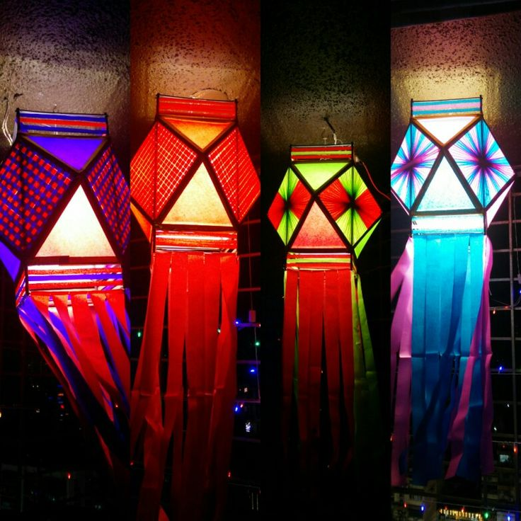
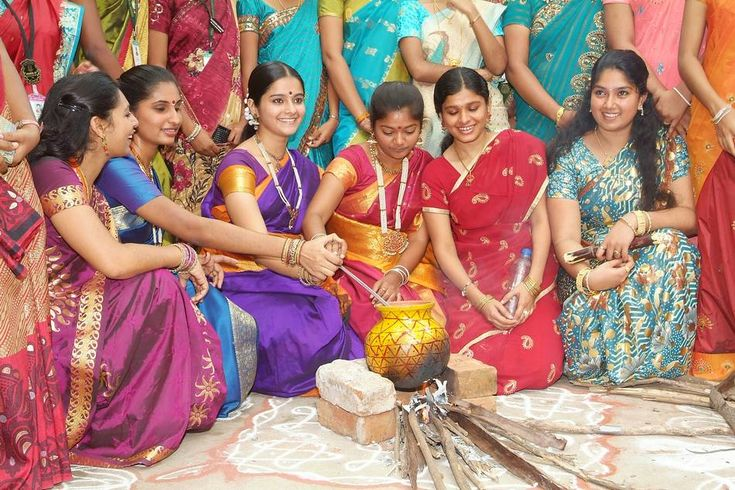
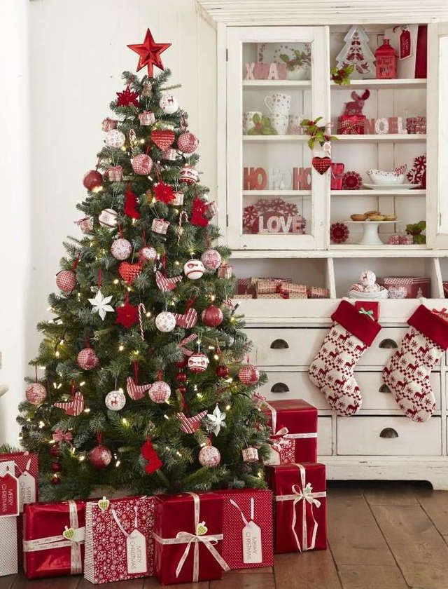